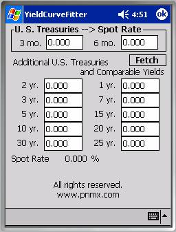
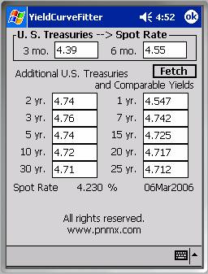
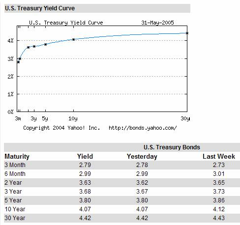

The YieldCurveFitter serves two purposes: to calculate the risk free rate; and to interpolate between Treasury bill rates to obtain rates for other popular terms. The standard T-bill maturities include all of those in the left column and both of those in the Spot Rate box at the top of the dialog. At right, you can see its initial state. Once you’ve used it, the values you enter are saved for recall the next time you use it.The spot interest rate is an instantaneous rate of interest available for transient deposits – those with no commitment to leave the account undisturbed for a period of time. It’s a conservative rate, often less than you could obtain with a simple passbook savings account at the corner bank or savings and loan. Assuming a normal yield curve where rates tend to increase as terms get longer, the spot interest rate is obtained by extrapolating the yield curve downward to the value it would be if the term were zero.
When the spot rate is constructed from the Treasury bill term structure, rates considered to be ‘risk-free’, the spot rate is considered to be the ‘risk free rate’ of interest which is central to options pricing theory. To get a good estimate of the spot rate you need the three and six month T-bill rates. The result of the extrapolation from these two T-bill rates appears immediately below the remaining edit boxes in the dialog.
When your Pocket PC is equipped with Ethernet capabilities and the network is available, the Fetch button will retrieve T-bill rates for the current calendar day from a server on the Internet. Once you’ve retrieved rates from the server, the YieldCurveFitter displays the date for which the most recently fetched T-bill rates apply. If you subsequently modify any or all of the U.S. Treasury yields to observe what might happen to the spot rate or any of the fitted yields, you can recall the unmodified T-bill rates for the day by clicking Fetch again. The unmodified values are cached locally, so no Internet connection is needed to reload the rates for the day, but if the calendar date has changed since your last successful fetch, the YieldCurveFitter will again attempt to query the server for the current rates. The cached values will also be retrieved if the calendar has changed, but an error occurs during the fetch operation.

Note that there is no guarantee that the latest rates available at the server will necessarily be the ones for the current date in your time zone. The date posted on the display is associated with the rates presented and is not related to the current date and time.The screen area below the Spot Rate and the Date will indicate progress messages associated with the query. The status line will blank after successfully completing the fetch. If an error should occur, a brief indication of the failure mechanism will remain displayed – these are generally an indication of a network failure. If the query should fail, the last stored values and their associated date will be reloaded.
The rest of the edit boxes are only necessary if you want to know what the T-bill equivalent yield would be on some term other than those available from the U.S. Treasury.
All of the edit boxes serve as both input and output. Any of the edit boxes where you enter a number becomes an input that drives the curve fitter. If you delete the contents of a field you had previously entered manually, that edit box will revert from input to output mode, and will be used to display a calculated rate with that term. T-bill rates are normally quoted with two fractional digits or less, so output values are displayed with three fractional digits to facilitate distinguishing between inputs and outputs. Naturally, you should not conclude that it’s somehow possible to develop four digits of accuracy using three digit data.
It is a very complex undertaking to predict the yield curve in all its permutations. The Yield Curve Fitter assumes that the yield curve is of low order, i.e. that it doesn’t contain complex undulations. The curve fitter will attempt to minimize errors at the input points under that assumption. If the yield curve really has a sort of serpentine appearance or uncharacteristic flat spots, the curve fitter will attempt to smooth those anomalous wrinkles out, not accommodate them. That’s usually what you want a curve fitter to do, since serpentine, flat, and inverted yield curves generally occur during transitional adjustment phases.
When you exit the YieldCurveFitter, the currently displayed rates values are stored to the registry. When you restart YieldCurveFitter, they will be reloaded, thus appearing exactly as you left it. The date displayed is determined by the date it was on the last time you successfully fetched rates from the server. Note that the date displayed does not imply that rates displayed are necessarily the same as those provided by the server on that date.
http://finance.yahoo.com/bonds/composite_bond_rates
is an excellent source for Treasury bond rates.
The chart below is from
